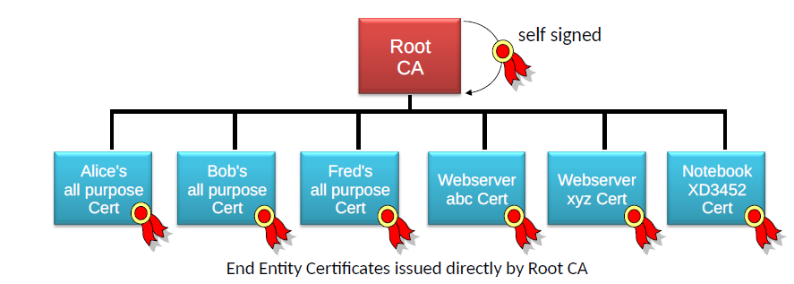
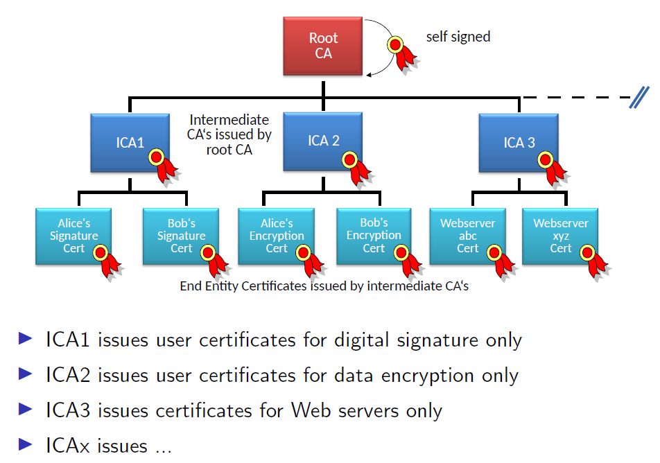
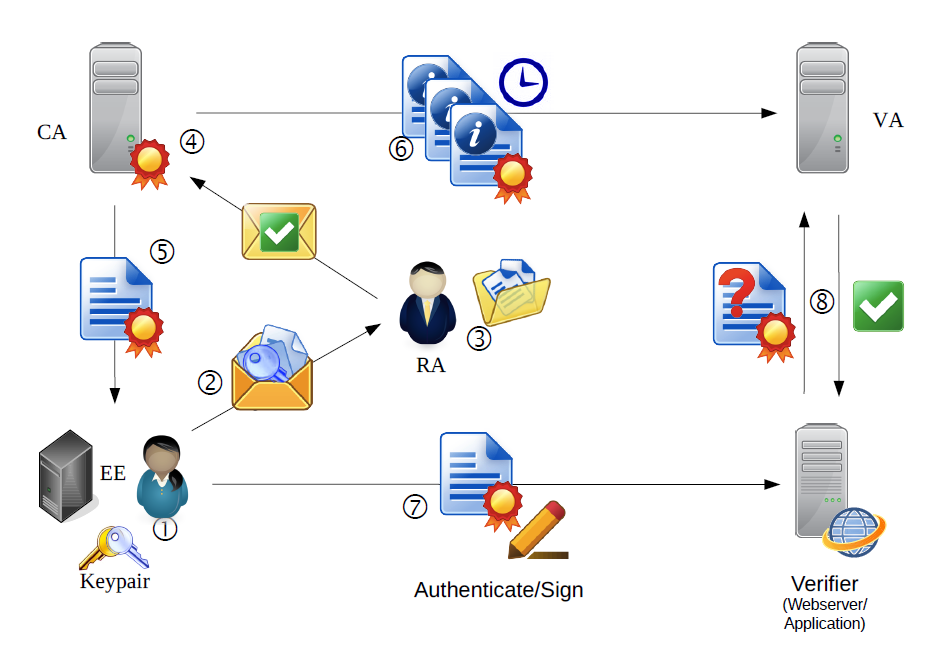
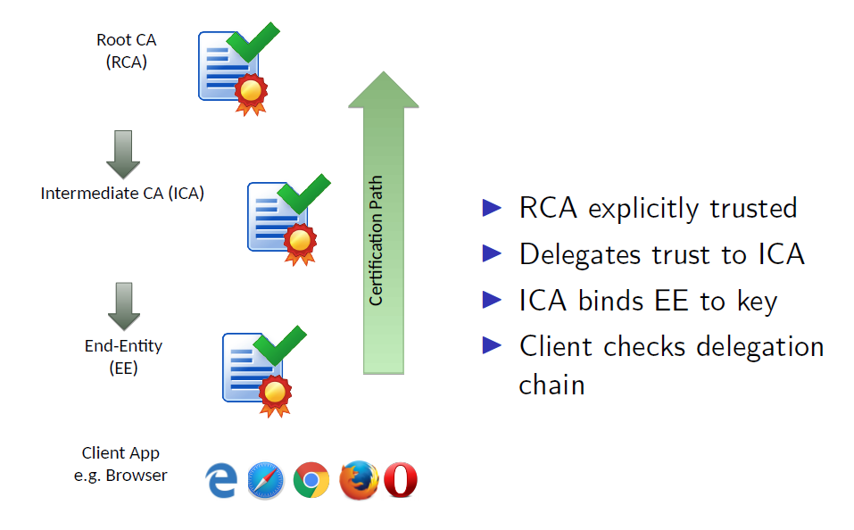
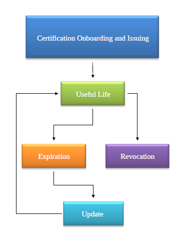
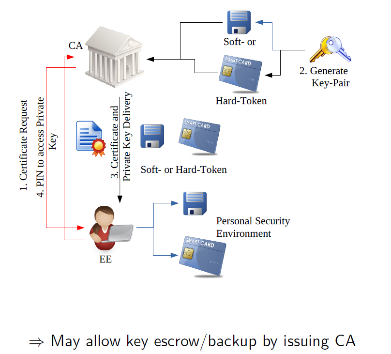
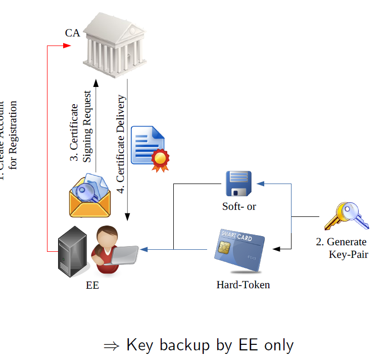
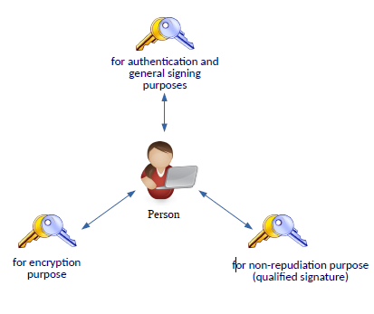

Public Key Infrastructure¶
links: AC2 TOC - Centralized public-key infrastructures - Key Revocation - Trust Issues in X.509 - Index
Public Key Infrastructure¶
**Core
- How can a user verify that a public key actually belongs to the person that claims to own this public key?
- How does an application find the correct public key of a certificate issuer?
Additional questions
- How do we keep private keys safe?
- How do we distribute information if someone lost control over their private key?
A PKI allows us to recognize which public key belongs to whom which manages certification and establishes trust.
Private PKI¶
- Created, operated and maintained limited to private organization only
- Issues certificates for internal purpose only. No trust relationship to external components, except cross-link to other private PKI
- Free in terms of PKI structure and content of certificates
- Use-cases: for User-Auth, VPN or Enterprise WPA (RADIUS)
Public PKI¶
- Well known, reachable, and trusted on a more global basis
- Operated and maintained by dedicated companies or by governmental services
- Per default known by popular Internet applications
- Example: X.509 Certificates for TLS, ZertES-based user certificates
\(\rightarrow\) There is no global PKI and hopefully there never will be.
PKI Reality¶
Any PKI faces authority and trust issues:
- Who is authorized to issue a specific certificate?
- Which are the CA's that claim authority to assign keys to names?
- What makes them authoritative in response to these names?
- How do they vet subjects?
- How are keys managed (by CA and subjects)?
Currently a hierarchical trust model (trust in a forest of authorities) is still the "best" solution we have.
PKI Components¶
End Entity (EE)¶
Denotes end-users, devices (e.g., server, routers), or any other entity that can be identified in the subject field of a public key certificate. End entities typically consume PKI-related services
Certification Authority (CA)¶
RCA = Root CA ICA = SubCA (Subordinate CA) = Intermediate CA
Issuance of certificates and (usually) CRLs. In practice, often integrates administrative functions of RAs and VAs.
CAs are the foundation of the PKI since they are the only components that can issue certificates.
- CAs act as trust anchors, and are thus high-security relevant components. Their private keys must be kept in a particularly secure environment.
- In a hierarchical system, a Root CA signs its own certificate with its private key (self-signed) according to a specific procedure
- To update its own self-signed key a Root CAs uses a key-rollover procedure to renew Root CA's key pair
Baseline Requirements (BR)
In several statements a CA describes the practices employed to support its certification services. For this purpose the IETF published templates in the form of a common RFC (RFC 3647):
- Certificate Practice Statement (CPS): a statement of the practices which a certification authority employs in issuing certificates.
- Certificate Policy (CP): a named set of rules that indicates the applicability of a certificate to a particular community and/or class of application with common security requirements (see Legal aspects) ^baee60
The CAB-Forum extended the requirements of a CA with the release of Baseline Requirements for the Issuance and Management of Publicly-Trusted Certificates
Single-Level CA
The root CA signs certificates of EE directly. It is difficult to achieve different key policies when using a single-level CA. Those CAs typically issue all-purpose certificates (encryption, digital signature, authentication). Because of those limitations this PKI setup is suitable for private CAs. Normally there will be only one root CA. Otherwise there would need to be some cross-certification between the root CAs. This is normally only done in multi-level CA setups.

Multi-Level CA
This type of PKI uses a tree model with the Root CA at the top and intermediate CAs (SubCAs, Signing CAs, Issuing CAs) at intermediate levels. The root CA typically only signs ICA certificates and is in general turned off and kept in a safe environment. SubCAs sign and issue EE certificates to the end entities. This enables the possibility to force specific key policies by issuing certificates for restricted purposes only (Authentication, Data Encryption, Digital Signatures).

Registration Authority (RA)¶
Assumes administrative functions from the CA, primarily EE registration. Can assist in related areas (e.g. EE authentication, token distribution, key generation, revocation reporting, archiving of key pairs)
- Roughly spoken: a registration location where a user has to be registered personally
- RAs convert "real" identities into "digital" identities
- An RA needs to have experience with unfailing identification of users
Examples
- Bank / post office
- Small meshed network of local agencies
- Human resources / personal office in a company
- IT service department
Validation Authority (VA)¶
Responsible for providing information on whether certificates are actually valid or not.
Repository¶
Generic term used to denote any method for storing certificates and CRLs so that they can be retrieved by EEs.
Idealized Issuance and Validation Process¶

Verification / Validation¶

RFC 5280 describes the algorithm for validating certificates, certification path and certification policies. This gives an answer to the following questions
- Is a certificate signed by a recognized trust anchor (is the certification path rooted in a trusted CA)
- Can the digital signature on the certificate be properly verified?
- Is the certificate within its established validity period?
- Has the certificate not been revoked?
- Is the certificate being used in a manner that is consistent with the certificate policies, name constraints, key usage, etc.?

Key Generation by CA¶

Reasons for CA Key Backup/Recovery
- Recovery of encrypted data after loss of access to private key (forgotten pw, employee left company, hardware malfunction, corrupted disk with keys on it, etc.)
- processing of encrypted messages for policy enforcement (anti-virus) at the network perimeter. In this example the firewall / anti-virus would need a list of all secret keys to decrypt, check and re-encrypt the messages
Key Escrow
Key escrow is a means to rebuild cryptographic keys in case the legitimate entity loses access to the data through a disaster or accident. The key has to stay confidential between the CA and EE. The problem is that governments could abuse this system and force the CA to give up the private keys.
Key Generation by EE¶


In a private PKI a single key pair for multipurpose might make sense but in a public PKI EE normally receive/generate multiple separate keypairs for different applications. Multiple key pairs are also used to support special policies for distinct services.
Reasons for multiple key pairs
- Different registration processes
- Restriction to certain policies and roles of EE
- Location of key generation and storage facility (e.g. must be generated on a secure signature creation device (SSCD))
- Security aspects (qualified signature \(\leftrightarrow\) authentication) to prevent challenge semantic attack
- Backup and recovery policies
- Key history and archiving handling
GPT Example Let's consider an example involving an individual user in a corporate environment. This user, named Alice, might have multiple roles within the organization, each requiring different levels of authentication and access.
1. General Employee Access: Alice has a key pair for basic authentication to the company network. This key pair is used to access common company resources like email, internal websites, and shared drives. It's generated on Alice's assigned work computer and stored securely there. It doesn't require any special hardware or backup and recovery policies, and the key pair can be quickly reissued by the IT department if necessary.
2. Secure Document Signing: In her role as a manager, Alice sometimes needs to provide a digital signature for official company documents. For this purpose, she has a second key pair that's generated and stored on a Secure Signature Creation Device (SSCD), such as a smart card or hardware security module. This is to ensure a higher level of security and to prevent a semantic attack (where an attacker tricks a user into signing a malicious document). To recover the private key or to reissue this key pair, Alice would have to go through a stringent process involving her manager and the IT department.
3. Access to Sensitive Data*: Alice is also part of a project that involves handling sensitive data. To access this data, she uses a third key pair that's tied to specific policies and roles. The registration process for this key pair is more rigorous and might involve in-person verification. The private key is backed up and archived securely by the IT department, and there's a detailed policy for recovering it in case Alice loses access to it.
Procedures after Key Expiration¶
- Expired private keys used for encryption need to be accessible even after the expiration or revocation of a certificate \(\rightarrow\) Long-term storage of expired private encryption keys!
- Digitally signed documents have to be verifiable even after the expiration or revocation of a certificate. All necessary information used for the validation of a signature has to be present for a long term period \(\rightarrow\) Long-term storage of expired public verification keys and certificates
Onboarding Process¶
- Crucial non-technical process in a PKI world
- Dependent on the purpose and field of application of a certificate this process may be anything between automatically (simple) and time consuming (complex)
- In an enterprise environement with a private PKI this is mostly done automatically by an Identity Managemtn System (IdMS)
- For public PKI's the range is very broad:
- Simple e-mail registration
- Identification by sending a copy of ID
- Personal appearance up to a rigid vetting of the identity
Requesting a certificate from a PKI¶
- PKCS#10 Certificate Request syntax Standard over TLS or PKCS#7 Cryptography Message Syntax
- Simple Certificate Enrollment Protocol (SCEP) from Cisco used for certificate auto-enrollment for network devices (Today used by Mobile Device Management (MDM) solutions)
- Microsoft Auto-Enrollment process for Domain integrated Entities
- GPT: This is a feature provided in a Microsoft Active Directory (AD) environment. The Auto-Enrollment process allows for the automated enrollment and renewal of certificates for domain-joined entities (such as user accounts and computer accounts) in an AD domain. This process is driven by Group Policy and uses the underlying Microsoft Certificate Services (a role in Windows Server) to issue the certificates. The types of certificates that can be auto-enrolled, and to whom, are controlled by the certificate templates configured on the Certificate Services server.
- Certificate Request Message Format (CRMF)
- GPT: Defined in RFC 4211, CRMF is a part of the Certificate Management Protocol (CMP). It's a syntax used to convey a request for a certificate to a Certificate Authority (CA) in certain PKI implementations. CRMF is often used in conjunction with PKCS#10, another standard used for certificate request syntax.
Certificate Management Protocol (CMP)¶
CMP is an internet protocol specified to manage X.509 digital certificates within a PKI
- A CMP client is able to communicate with a PKI service to request, revoke, suspend and resume certificate
- CMP messages are ASN.1/DER encoded and are usually encapsulated in HTTP(S) messages
- CMP is supported by several libraries: cryptlib, EJBCA, OpenSSL, BouncyCastle, ...
Automatic Certificate Management Environment (ACME)¶
ACME allows setting up a HTTPS server and automatically obtain a browser-trusted certificate, without any human intervention
- Runs a certificate management agent on the web server \(\rightarrow\) Certbot
- Issues domain validated (DV) certificates for web servers only
- Certificates have a lifetime of 90 days
- e.g. letsencrypt.org
Problems of the trust-list model¶
- There are hundreds of "trusted" root CAs installed in the OS/browser
- There are hundreds of browser-accepted root CAs and an unknown number of subordinate ICAs
- Each of them can break TLS/ X.509 security
- It does not matter how good your CA is - the only thing that matters is the worst CA of them all
- The set of trusted root CAs must be protected against malicious modification
- The set of trusted root CAs must be updated
- automatically (MS, Apple, ...)
- or on next release (Mozilla, others)
- Who decides which CAs are trusted?
\(\rightarrow\) We assume software vendors can establish trustworthy CAs
links: AC2 TOC - Centralized public-key infrastructures - Key Revocation - Trust Issues in X.509 - Index